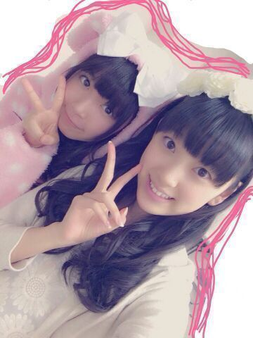

| 2013/10 16 Wed | ひめたん(*>ω<*)そ の356 |
いつもありがとうございます

前回の記事もコメントたくさん(´;ω;｀)
嬉しくてコメント読んでお勉強なんて放棄......はっ

この前の乃木どこロケのあと
３人で二次会したんだよー
そう。席的に。
りぼん反対につけりゃよかったあ
あんましりぼん写ってねーのさ
ひめたん負けない負けないぞ「(｀;ω;´)「しゃー
みおちゃん！らぶ
みおちゃん (堀未央奈ちゃん)
最近は一緒にお手洗い行く仲です♪
えっもちろん強要なんてしてないよ？
無理なんてしてないよねみおちゃん？え？
とにかくかわいーい。17さいおめ！

それでねー
着ぐるみひめたん見たかったーって方が
いっぱいいたからねー
ちょっと調子にのって
7thの握手会でも着ようかなって思ってる☆
りぼんほどじゃないけど
着ぐるみコレクターになってしまいそう
ちなみに今は４つおうちにあるよ＼(^O^)／
なんかリクエストあったら待ってますっ
ここ２日くらい
ストレッチポールってやつにハマってる！
詳しくはググってみてくださいねー
硬めの円柱みたいなやつの上に寝そべって
ごーろごーろするだけで
体のコリがなくなるらしいですよー♪
きもちよすきもちよす。うとうと
午前中 東京は台風が大接近してましたが
みなさん大丈夫ですか？
みなさんご無事でありますように。

 ひめたんみたいに超可愛いアイドル
ひめたんみたいに超可愛いアイドル
学校ではキャーキャー言われたりするの？
超可愛くもなければ可愛くもないんですがね。
仲良しのみんなは
学校のおともだちとして仲良くしてくれるよー
学校とかでキャーキャー言われるのは
ちょっと苦手なので......
坊主にしよーか悩んでるのー！笑
したほうがいいかな？笑
チャレンジするのはいいことよー
悩んだならやってみよー
ただしこれからの季節寒いかもよー(´・ω・｀)
男でもびーむ使っていいですか？
ちなみに効果ありますかね？笑
効果はわかんないけど
本家には勝てないかもよ( ^ω^ )にや
びーむは自由に使ってちゃっちゃっちゃー
直筆のTシャツ着て握手いきたいけど...
着るのもったいなくて笑
どーしよーか？笑
直筆おめーとー！
大事にしててくれるのももちろん嬉しいし
握手会で自慢してくれちゃってもいーんだよー
いや、もちろん普段着でも
わんちゃんの散歩のときに着てもいーんだよ。
広島市内に行ったら何して遊べばいーかな？？
なんだろねー(*^ω^*)
市電で移動してみたら景色が楽しいと思うよー♪
もっとも広島県民にとっちゃ普通の光景だから
市電乗って携帯つついたりゲームしたりしてたけど
もったいないなーって最近になって思った。
ひめたんのお腹つついたりしていい？
つつかれたらどうなるの？
ちま(樋口日奈ちゃん)がよく突っついてきます
もんんんんのすごいスピードで叩(はた)きます
笑顔で叩きます
言ったよ？言ったからね？
だーからフリじゃないってば！
バスケの試合に負けちゃったから、
慰めて下さい。お願いです。
ひめたんがえらそうなことは言えないけど
一生懸命やったらそれだけで満点よ(｀・ω・´)
応援してます♪無理はしないでね。
妹のみり愛ちゃんに、
アニメのコスプレをさせるとしたら、
何のコスプレをさせたいですか??
アニメはあんまーし詳しくないけど
去年あしゅりん(齋藤飛鳥ちゃん)が着てた
園児服なんてかわいーだろーなー
でも本人に言ったらきっと
「童顔......」って言われそーやだーかわいー(〃ω〃)
あのね、私は今高1なんだけど、
大人になりたくないんだよねー
ひめたんは高1の時そんなこと考えたー？
小学生くらいの時は思ったかなー
だって楽しかったもーんー！
今ははやく高校卒業したくてたまらぬ(´・ω・｀)
ひめたんは髪切りに行くペースどれくらい？
切るのは年２とかが基本かしら
カラーとトリートメントには
もうちょっと多い頻度で行くよ♪
若様単推しなんだけど
影でひめたん推してもいいかなー？
それともひめたん推し全開がいいかな？
影であっても応援してくださるのは嬉しす☆
夫婦推しやね∩^ω^∩
全開はもうーねーめちゃ嬉しいけど
若月の許可はとってみてね。
みりりんとひめたんがいちゃいちゃしてて、
嫉妬してます。←←
ひめたんとみりりんとまではいかなくても
しょーがないですが（笑）、
どうしたら少しでも仲良くなれますか？
ひめたんとみりりんは相当仲良いからねー♪
なんだろな、とりあえず
ひめたんと兄弟姉妹になろう。
今日体育祭だったの！
めっちゃ焼けたんだけど
焼けたときひめたどうする？
保湿が大事って聞くよね(｀・ω・´)
たっぷり潤いをあげて、パックする！
妹みたいな存在の
地元の幼なじみちゃんから
お手紙が届いた
ちっちゃい頃よくお手紙とか書いたけど
最近あんましお手紙書いてないけど
手書きの文字ってなんかいいよね。
ほっこりしました(*^ω^*)ありがとう！

(＊´・ω・＊)
コメント(422)
2013/10/16 21:12